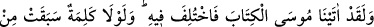
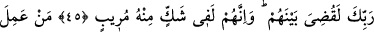
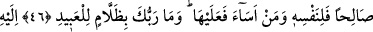
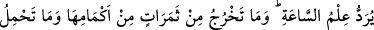
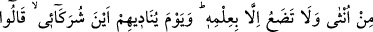
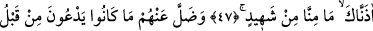
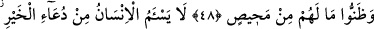
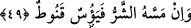

KİM İYİ BİR İŞ YAPARSA
45. Andolsun biz Mûsâ’ya Kitab’ı verdik, onda da ayrılığa düşüldü. Eğer
Rabbinden bir söz geçmiş olmasaydı, aralarında derhal hükmedilirdi (işleri
bitirilirdi). Onlar Kur’an hakkında derin bir şüphe içindedirler.
46. Kim iyi bir iş yaparsa, bu kendi lehinedir. Kim de kötülük yaparsa aleyhinedir.
Rabbin kullara zulmedici değildir.
47. Kıyâmet gününün bilgisi, O’na havâle edilir. O’nun bilgisi dışında hiçbir
meyve (çekirdeği) kabuğunu yarıp çıkamaz, hiçbir dişi gebe kalmaz ve doğurmaz.
Allah onlara: Ortaklarım nerede! diye seslendiği gün: Buna dâir bizden hiçbir şâhid
olmadığını sana arzederiz, derler.
48. Böylece önceden yalvarıp durdukları onlardan uzaklaşmıştır. Kendilerinin
kaçacak yerleri olmadığını anlamışlardır.
49. İnsan hayır istemekten usanmaz. Fakat kendisine bir kötülük dokunursa
hemen ümidsizliğe düşer, üzülüverir.
“Andolsun” Allah’a yemin olsun “biz Mûsâ’ya Kitabı” Tevrât’ı “vermiştik, onda da
ayrılığa düşülmüştü.” Onu tasdîk edenler de, tekzîb edenler de oldu. Mûsâ’dan beşyüz
sene sonra Tevrât’ı değiştirenler de oldu. “Eğer Rabbinden” seni tekzîb eden ümmetin
hakkında azâbın ertelenmesine dâir “bir söz geçmiş olmasaydı,” dünyada tekzîb
edenlerin “aralarında derhal hüküm verilirdi” ve işleri bitirilirdi. “Onlar” senin
kavminin kâfirleri “ondan” Kur’ân’dan “derin bir kuşku içindedirler.”
Ey Muhammed! (s.a.) Senin kavminin Kur’ân’a karşı olan durumu da böyledir.
Kur’ân’a inanan da, inkâr eden de vardır. Gerçi Kur’ân bizim özel korumamız altında
olduğu için onu tahrîf edemezler. Sonuçta semâvî kitaplar hakkındaki ihtilaflar geçmiş